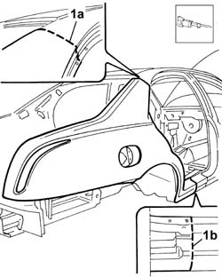
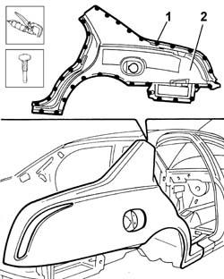
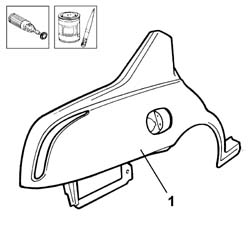
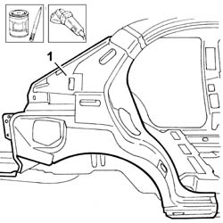
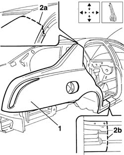
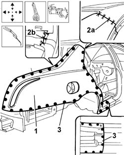
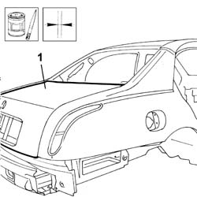

7210E53 RIGHT REAR WING
- Path
- Procedures > 72 panels and frames > 7210 REMOVING REFITTING > 7210E EXTERNAL PARTS > 7210E53 RIGHT REAR WING
- Kind
- repair procedure (removal / refitting; the operation number is the code)
- Applies to
- all engines; all production periods
- Interactive page
- https://sloeber94.github.io/elrnDB-lThss/en/#/501183
Applies to: all engines; all production periods
Applies to: all engines; all production periods
 Removing
Removing
 Refitting
Refitting- Check that the components connected are not distorted by checking the bodyshell alignment measurements using suitable equipment (gauges, templates or jigs).
- Carry out any bodyshell straightening operations before cutting the component.
1. Cut at points (1a) and (1b) using a power saw.

Applies to: all engines; all production periods
1. Using a chamfering machine and drill, reduce the spot welds along the outer perimeter of the wing.
2. Remove the wing using a hammer and chisel.

Applies to: all engines; all production periods
Refitting
Removing1. Remove the anti-corrosion treatment from the entire perimeter of the replacement part using a rotary brush and apply electro-galvanizing paint.

Applies to: all engines; all production periods
1. Remove the spot weld residues using a disc grinder and straighten the edges of the panel along the surface of the bodyshell concerned.
- Apply electro-galvanizing paint.

Applies to: all engines; all production periods
1. Position the wing correctly on the bodyshell and secure it using self-locking clamps.
- Check that the alignment is perfect.
2. Trace the upper (2a) and lower (2b) cutting lines on the replacement part.

Applies to: all engines; all production periods
- Cut the superimposed panels, following the line.
- Remove the replacement part and the metal offcuts from the bodyshell.
- Clean the cutting area and apply electro-galvanizing paint.
1. Position the wing correctly on the bodyshell and secure it using self-locking clamps.
- Check that the alignment is perfect.
2. Carry out brazing welding at points (2a) and (2b).
3. Using a spot welder, weld along the entire perimeter and the lower cut of the wing.

Applies to: all engines; all production periods
- Clean the areas involved in the welding removing the excess material.
- Check that the welded components are correctly positioned.
- Apply electro-galvanizing paint to the ground parts.
1. Fit the boot lid and check the alignment.
